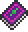

Cursed Flames
| Cursed Flames | |
|---|---|
|  | |
| Statistics | |
| Type | Weapon |
| Damage | 35 |
| Knockback | 6.5 |
| Max stack | 1 |
| Mana | 14 |
| Shoot speed | 10 |
| Rarity | 4 |
| Use time | 19 (Very Fast) |
| Tooltip | Summons unholy fire balls |
| Sell | 10 |
- This article is about the magic weapon. For the crafting material, see Cursed Flame.
The Cursed Flames is a magic weapon with Fire Flower style of attack, but fireballs are green colored and seem to move at a higher velocity than those from the Fire Flower. Also unlike Fire Flower, the Cursed Flames can penetrate 3 times, hitting several enemies at once, or hitting the same enemy multiple times if it bounces a certain way. Projectiles can travel in water and even set enemies on fire underwater.
It can be held down to shoot repeatedly.
Crafting
Recipe
| Crafting Station | ||
|---|---|---|
| Ingredient(s) | Amount | |
| Spell Tome | 1 | |
| Cursed Flame | 30 | |
| Soul of Night | 20 | |
| Result | ||
| Cursed Flames | 1 | |
Notes
- The Laser Rifle is actually more efficient and accurate than the Cursed Flames, and while the Laser Rifle is a weapon acquired by chance, it can be retrieved earlier on than the Cursed Flames.
History
- 1.1: Introduced.